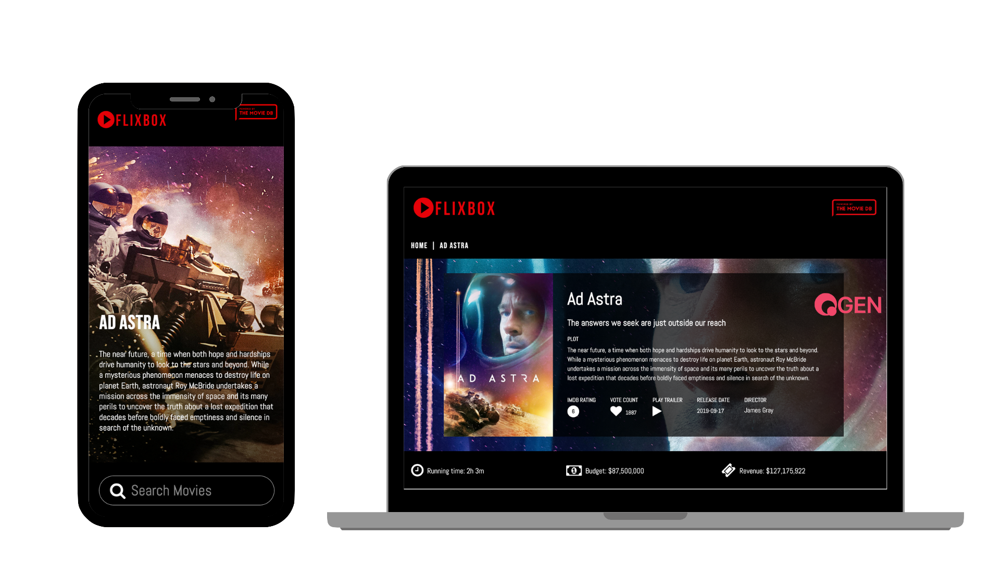
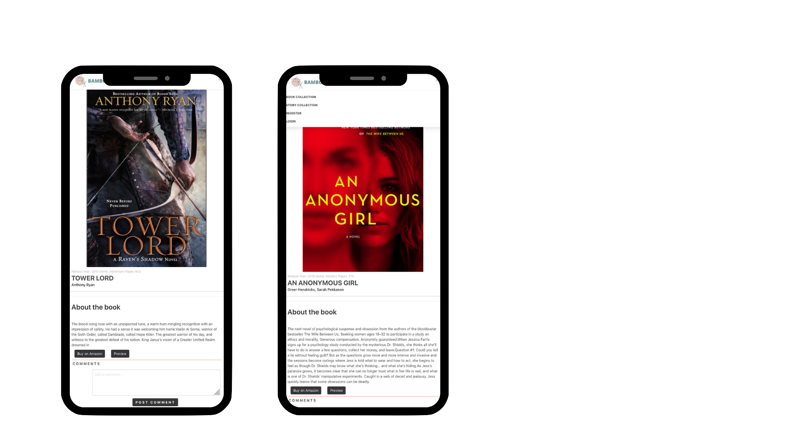

Q
Gen
Social Network Website
Individual project | 7 days
Q Gen is a Social Network platform where users can publish, discuss and share
ideas, make friends and create chats. A CRUD application built with ReactJS on
the Front-End and Python and Django on the Back-End, using SQL database and
Django REST framework.
Technologies: Adobe Illustrator, API, axios, Bulma, CSS, Git, Github, Node.js, Django, Python, React, SCSS, UX, Webpack


Bambook
Website
Group project | 7 days
BamBook is a Full-Stack Web Application for authors and book lovers that allows
users to discuss books, post their own stories, browse those of others and com-
municate with each other. It is a CRUD application built with a MERN stack. My
main responsibility was to build out the back end: the models, the RESTful API,
the User Authentication. On the front end, I was responsible for layouts and
forms.
Technologies: Adobe Illustrator, Axios, Babel, Bluebird, Bulma, Express, HTML, JavaScript, MongoDB, Mongoose, Node.js, Promise, React.js, SCSS, Webpack


Moon
& Sun
Web Application
Paired project | 4 days.
This is a Web App that accurately shows the state and phase of the Sun and
Moon in any place with a daily-updated horoscope. The project was built in Re-
actJS using external APIs.
Technologies: HTML5 with HTML5 audio, CSS3 with animation, JavaScript (ES6), Git, GitHub, Google Fonts, React.js, OOP
Sink
a ship, baby
Web Game
Individual project | 7 days
Utilized HTML, CSS and JavaScript to built a grid-based vanilla JS game in the
browser (Version of Battleship) in a week. It was my first real-world practice with
JavaScript and the DOM.
Technologies: HTML5 with HTML5 audio, CSS3 with animation, JavaScript (ES6), Git, GitHub, Google Fonts, OOP